Kernel implementation¶
Basics¶
Kernel represents a kind of scattering mechanism for a homogeneous neutron scatterer.
Mainly we are concerned with two methods for the scattering kernel:
- scattering_coefficient(neutron)
- S(neutron)
The method scattering_coefficient(neutron) can be computed as
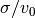, where  is the total cross section
of a unit cell and 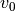 is the unit cell volume,
if the material is crystalline.
is the total cross section
of a unit cell and 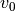 is the unit cell volume,
if the material is crystalline.
The method S(neutron) resembles the dynamic structure factor
 .
In this method, we need to choose a scattering direction and
its speed, and adjust the probability of the neutron
according to the dynamic structure factor.
It is useful to remember that the dynamic structure factor
is concerned with the orientation and energy distribution
of the scattered neutrons, while the total amount of scattering
is determined by the cross section, which is already taken
care of by the scattering_coefficient method.
Another useful fact is when the scattering is isotropic,
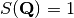.
The method S(neutron) is more complicated than just
computing , however.
It involves Monte Carlo selection and the random variables
are usually not simply
.
In this method, we need to choose a scattering direction and
its speed, and adjust the probability of the neutron
according to the dynamic structure factor.
It is useful to remember that the dynamic structure factor
is concerned with the orientation and energy distribution
of the scattered neutrons, while the total amount of scattering
is determined by the cross section, which is already taken
care of by the scattering_coefficient method.
Another useful fact is when the scattering is isotropic,
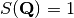.
The method S(neutron) is more complicated than just
computing , however.
It involves Monte Carlo selection and the random variables
are usually not simply  and
and  .
.
In the following, typical implementations for some kernels are documented.
Isotropic kernel¶
Isotropic kernel can be useful for testing purpose. And it could be a good approximation for incoherent scattering at low temperature.
The implementation is easy: just generate randomly and uniformly neutrons in all 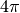 solid angle.
S(Q,E) kernel¶
This kernel works with scalar Q instead of
vector, meaning it is most useful for powder studies.
Start from the definition of dynamic structure factor:
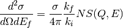
The integrated scattering intensity for a chosen  and is at a cone, or we can write
and is at a cone, or we can write
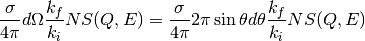
Observe

and hence,
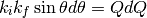
we obtain,
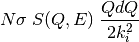
Or we can rewrite it as
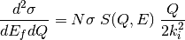
Coherent inelastic phonon kernel for powder sample¶
From Squire, the double differential cross section for coherent inelastic phonon scattering that excites one phonon is (the expression for scattering that annhilates one phonon can be treated similarly)
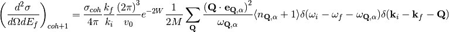
We want to compute the total cross section for a specific .
Note that the differential solid angle above is for the scattered neutron,
i.e., 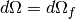.
Also note that for ideal powder sample, there are small crystallites
inside the sample, and their orientation are uniformly and randomly
distributed in the solid angle.
Therefore, the integration we are looking for is
(1)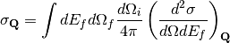
where
(2)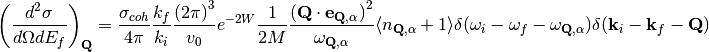
We observe that
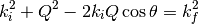
where  is the angle
between 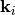 and .
Differentiate the equation and we obtain:
is the angle
between 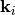 and .
Differentiate the equation and we obtain:
(3)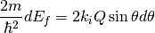
Since is at a cone about
at angle , we have
(4)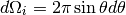
On the other hand,
(5)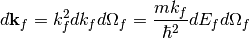
Plug Eqs (2), (3), (4), (5) into (1), we obtain
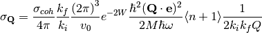
In the implementation, we need to randomly select a branch and a
, and then compute
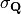.
Due to randomly selection of ,
a multiplication factor of
number of possible Q points to choose from.
Consider the number of Q points in one reciprocal
unitcell for one phonon branch is N, or
the number of unit cells in one crystal,
we obtain the multiplication factor as
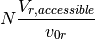
where 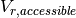 is the reciprocal volume accessible by the scattering process, which depends on the incident neutron energy, and 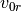 is the volume of the reciprocal unit cell. Note that 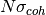 is actually taken care of elsewhere, and 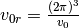 the probablity multiplication factor is
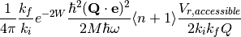
One-phonon coherent inelastic scattering, single crystal¶
Note
Under construction
Now we are considering more complex examples. Suppose we are working on a single-crystal sample. For now, we are only concerned with coherent inelastic scattering with one-phonon processes. First let us look at the differential cross section of one-phonon emission:

where 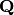 is the wave vector of phonon,  is the index for phonon branch, 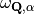 is the phonon enregy,
is the index for phonon branch, 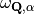 is the phonon enregy,  and
and  represents initial and final states of neutron, 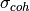 is the coherent scattering cross section, is the volume of the unit cell, 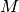 is the mass of the atom.
represents initial and final states of neutron, 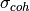 is the coherent scattering cross section, is the volume of the unit cell, 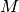 is the mass of the atom.
For convenience, define
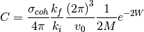
In the case of large crystal, the density of Q points in the reciprocal space is high, and the summation over can be replaced by an integration:
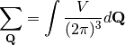
(C.1) reduces to
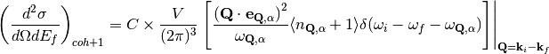
The “evaluate at” symbol reminds us the momentum conservation condition resulted from the integration of one of the delta functions in (C.1).
We now want to evaluate the differntial cross section 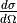 by doing an integration over 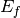
This means that we fix the scattering direction, 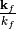. By changing , we are changing the length of scattering wave vector, 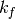, and therefore changing and
Thus
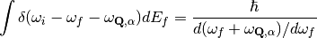
The differential cross section is then
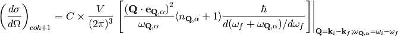
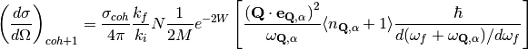
in which we neglect the “evaluate at” symbol.
To get scattering probability from scattering cross section, we need a factor of
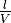
where  is the length of the path that neutron goes through the sample, and
is the length of the path that neutron goes through the sample, and  is the volume of the sample.
is the volume of the sample.
Also in the previous section we have shown that we need a factor of .
Considering the absorption along the path, there is another factor of 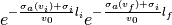.
So the final result of Monte-Carlo probability multiplication factor is
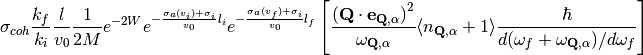
where 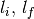 are the length of entering and leaving paths. The incoherent scattering cross section is 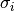, and
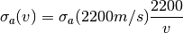
is the absorption cross section.
Scattering from single crystal analytical dispersion function¶
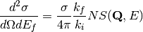
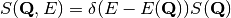
The algorithm first randomly choose a direction in the
4pi solid angle, and that takes care of
 .
.
Along a chosen direction 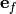, we can use as a parameter, and get two functions for energy transfer:

and
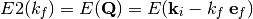
The delta function in the structure factor requires these two functions to equal. We seek to transform the integration of delta function:
or
Advanced topics¶
Method:
bool total_scattering();
by default return false. Override this method in a kernel to return true if the kernel has a strongly energy-dependent total scattering cross section, such as, in the case of powder diffraction.